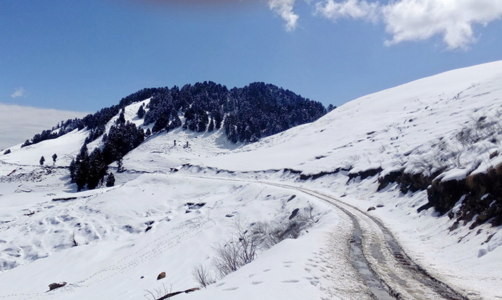

NarkandaGeneralGeographyClimateFloraDemographicsCulture
Climate
This town experiences a pleasant weather throughout the year. During the summer time from April to June, the maximum temperature is around 20°C while the minimum temperature is 10°C. While the months of July to September, Narkanda experiences the monsoon season, the months of November till March are the months when this town is covered in the sheets of snow. The maximum temperature during this time are 7-8°C and can drop till - 5to-10°C during the nights.
